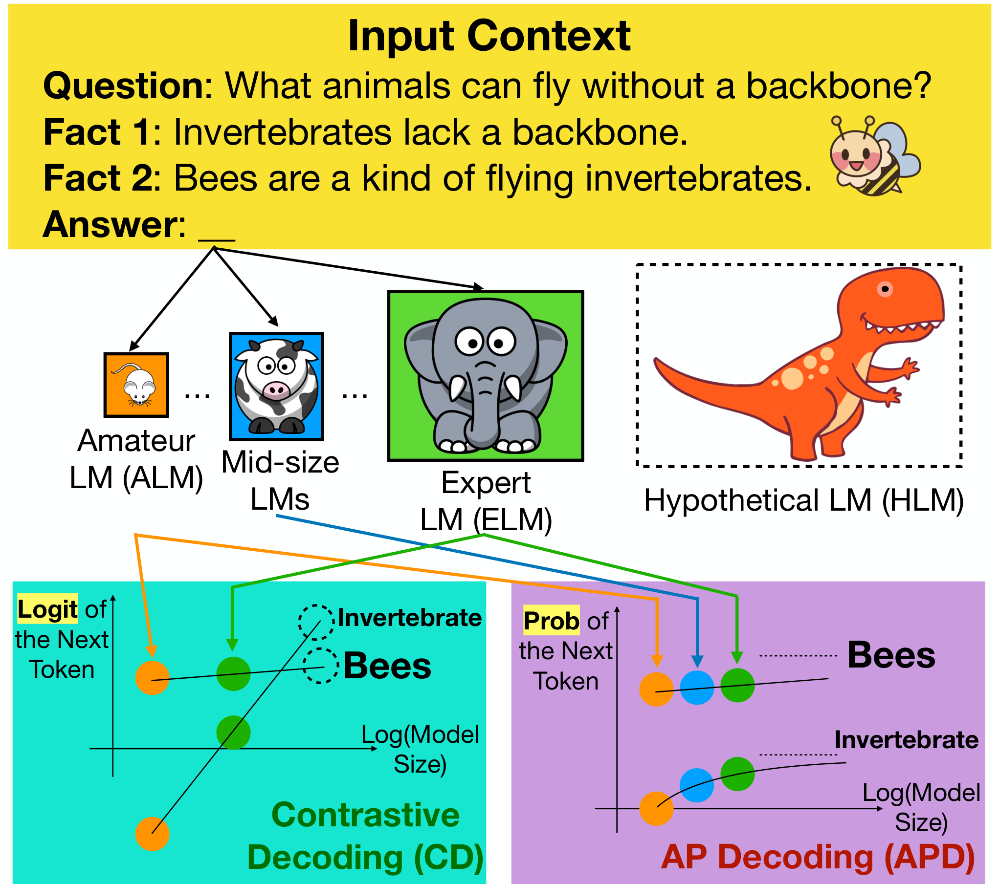
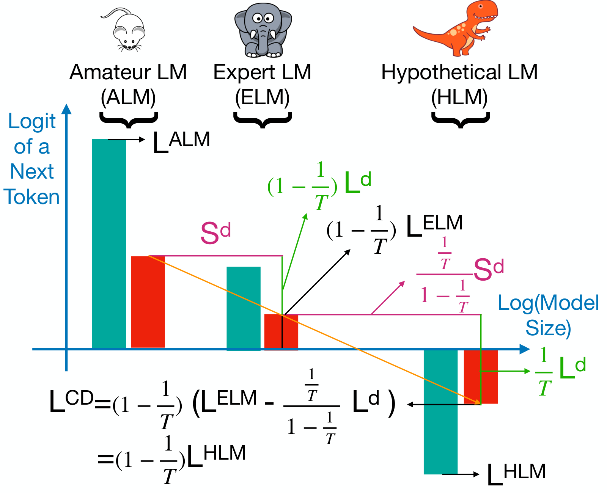
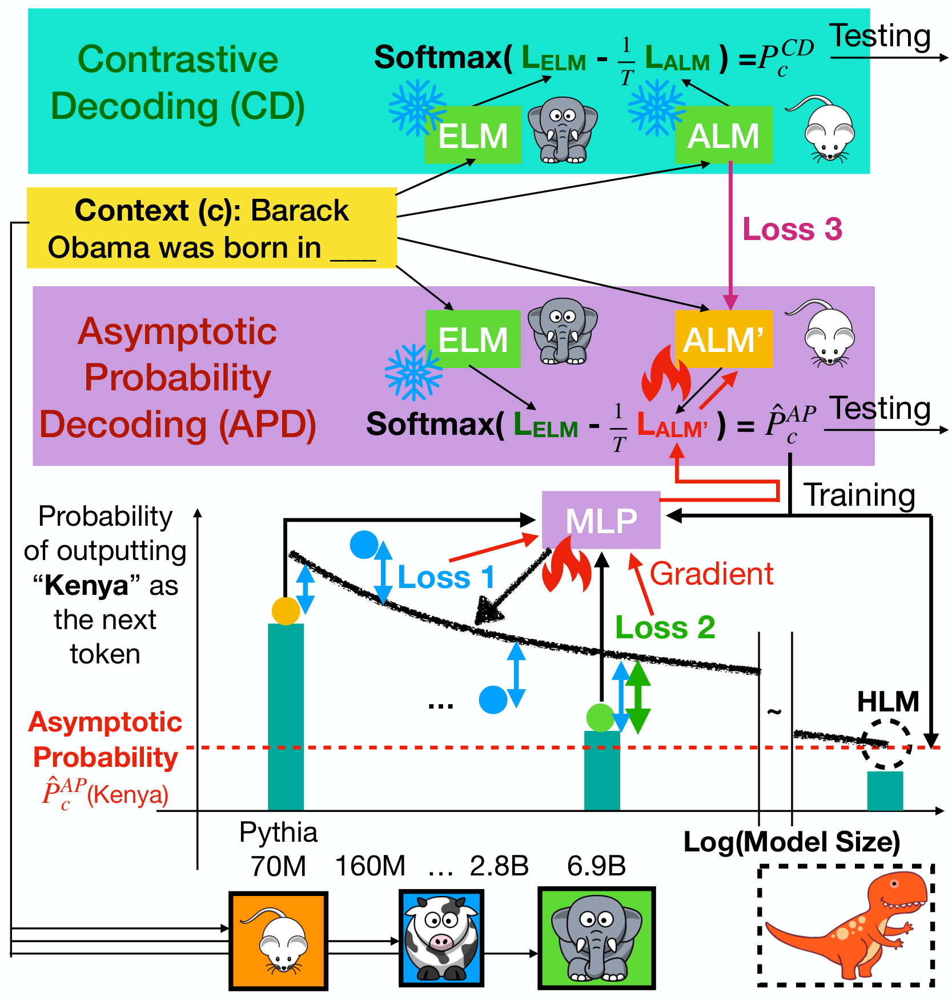
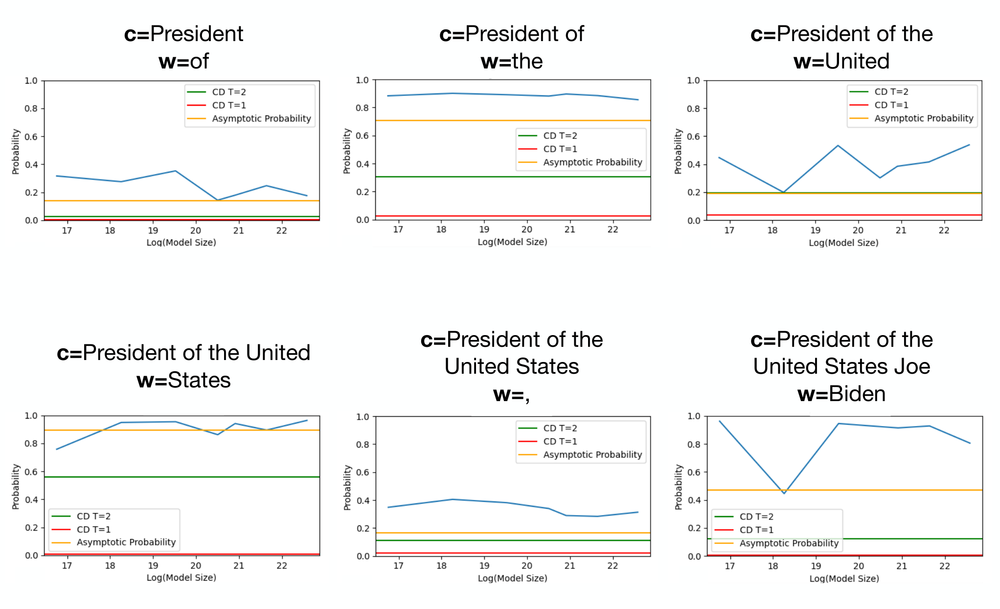

Explaining and Improving Contrastive Decoding
by Extrapolating the Probabilities of a Huge and Hypothetical LM
Abstract
Contrastive decoding (CD) (Li et al., 2023) improves the next-token distribution of a large expert language model (LM) using a small amateur LM. Although CD is applied to various LMs and domains to enhance open-ended text generation, it is still unclear why CD often works well, when it could fail, and how we can make it better. To deepen our understanding of CD, we first theoretically prove that CD could be viewed as linearly extrapolating the next-token logits from a huge and hypothetical LM. We also highlight that the linear extrapolation could make CD unable to output the most obvious answers that have already been assigned high probabilities by the amateur LM.
To overcome CD’s limitation, we propose a new unsupervised decoding method called Asymptotic Probability Decoding (APD).11
1
The code will be released at https://github.com/amazon-science/llm-asymptotic-decoding
1 Introduction

Contrastive Decoding (Li et al., 2023) (CD) is a simple heuristic that uses the logit of a small LM (amateur LM) to improve the logit of a large LM (expert LM).22
2
Since the amateur LM is easier to fail, CD adjusts the logit of an expert LM by subtracting the logit of an amateur LM, so a lower amateur’s logit implies a higher output logit of CD. Using Figure 1 as an example, CD produces a large logit for Invertebrates because its amateur’s logit is low.
Scaling law demonstrates that language models (LMs) are able to generate more factual next tokens as their sizes increase (Kaplan et al., 2020; Lee et al., 2022). However, their growing energy consumption and costs limit their further applications (Strubell et al., 2019; Lacoste et al., 2019; Kaack et al., 2022), necessitating techniques that can reduce LM model sizes without compromising their superior performances. In this work, we theoretically demonstrate how contrastive decoding (CD) addresses this LM size-reduction challenge using a simple linear extrapolation. The theory also helps us to identify the limitations of CD and propose APD, a more factual decoding method.
First, we discover that CD actually uses the tiny amateur LM to help the large expert LM infer the logit of a huge and hypothetical LM. Specifically, the logits from CD could often be viewed as a linear extrapolation of the logit curves from the expert LM and amateur LM. The finding explains several prior empirical observations and also reveals weaknesses of CD. For example, CD tends to neglect the most obvious answer and overemphasize less likely answers in its output distribution instead. We call this tendency “obvious blindness”. The rare answers could sometimes degrade the generation’s factuality. For example, both amateur and expert LM in Figure 1 can identify that Bees is the most clear answer suggested by the clues but only the expert LM realizes that there are also some other possible answers such as Invertebrates. Then, the aggressive linear extrapolation of CD makes Invertebrates become the most probable next token. This is not a totally factual answer because many invertebrates cannot fly.
Motivated by this theoretical explanation, we propose a novel decoding method called Asymptotic Probability Decoding (APD). APD predicts the asymptotic probability from a hypothetical LM with an infinite size. By explicitly modeling the changes of the next-token probabilities as the size of LM increases, APD is able to output the correct probabilities for both easy/common and difficult/uncommon answers. For the example in Figure 1, the probabilities of Bees and Invertebrates are both increasing as the LM becomes larger. By leveraging the probabilities of mid-size LMs, we can reasonably infer that Bees should still receive a larger probability from a huge LM than Invertebrates. Finally, modeling the probability curves for many next tokens on the fly is too time-consuming, so we fine-tune an amateur LM such that the output probability of APD is close to asymptotic probability, which makes APD as efficient as CD.
The main goal of our experiments is to check if APD can further improve the factuality compared to CD. We choose our expert LMs and amateur LMs from the LLM families that provide smaller LMs, including Pythia (6.9B, 70M) (Biderman et al., 2023), OPT (6.7B, OPT 125M) (Zhang et al., 2022), and Qwen1.5 (4B, 0.5B) (Bai et al., 2023). By comparing different sampling methods in FactualityPrompts (Lee et al., 2022), we demonstrate that APD consistently and robustly outperforms CD with the best temperature and other state-of-the-art distribution modification methods such as DoLa (Chuang et al., 2023) and temperature sampling (Ficler and Goldberg, 2017). After being combined with dynamically adjusted top-p sampling (Chang et al., 2024), our method can help Pythia 6.9B to simultaneously achieve the factuality of top-p sampling (Holtzman et al., 2020) with and diversity of top-p with .
We also compare the perplexity of APD and CD using seven datasets. We found that the improvement gap is especially large when CD makes more mistakes on easier tasks. For example, in LAMBADA (Paperno et al., 2016) and CommonsenseQA (Talmor et al., 2019), APD on top of Pythia 6.9B could achieve a similar or better perplexity than Pythia 12B, while outperforming CD by a large margin. We plan to release our code to reproduce the results after our work is accepted.
Our main contributions include
- •
We provide theoretical support for contrastive decoding (CD) and demonstrate that our theory can explain many prior findings from Li et al. (2023); O’Brien and Lewis (2023).
我们为对比解码提供理论支持，并展示该理论能够解释 Li 等（2023）以及 O’Brien 和 Lewis（2023）中的许多既有发现。 - •
We propose a new distribution modification method, asymptotic probability decoding (APD), which addresses the “obvious blindness” of CD.
我们提出新的分布修改方法，即渐近概率解码（APD），以解决 CD 的“显然答案盲区”问题。 - •
We conduct extensive experiments, which indicate that APD could significantly improve the generation factuality of CD.
我们进行了广泛实验，结果表明 APD 可以显著改善 CD 的生成事实性。
2 Contrastive Decoding as Extrapolation
First, we review contrastive decoding (CD) and its justification. In CD, the probability of the next token for context is determined by
| (1) |
where is all the words in the vocabulary, and the logit for the token is
| (2) |
where and are the logit of the expert LM (ELM) and amateur LM (ALM), respectively. is the softmax temperature of ALM. In the original paper (Li et al., 2023), the effectiveness of CD is mostly explained by removing the bad distribution of ALM from the ELM. The explanation is correct, but not specific enough to explain many prior empirical findings in Li et al. (2023); O’Brien and Lewis (2023).
Here, we provide another intuitive justification of Equation 2: ELM and ALM usually come from the same LLM family and they are trained on the same training corpus using similar hyperparameters, so their main difference is the model sizes. would be smaller when is small and is large. In this case, it means that the LMs’ logits are decreasing for the token as the LM’s model size increases. We can reasonably infer that the larger LM will output an even smaller logit if the trend continues. Thus, CD actually infers the logit of a larger LM by subtracting from . We describe this intuition in a formal way next.

2.1 Theoretical Analysis
Theorem 1.
If
a) the ALM’s temperature , and
b) the logits of LMs and the logarithm of the LM sizes have a linear relationship, then
the logit of contrastive decoding (CD) for the token , where is the logit of a LM with size .
Setting for ALM is effective in various tasks (O’Brien and Lewis, 2023), so our first assumption often holds in practice. The linear relationship means we can always draw a line to connect all the logits from LMs with different sizes as in Figure 2. Since is a global hyperparameter, is the logit of HLM using the temperature .
Proof.
| (3) |
From Figure 2, we can see that the size difference between HLM and ELM should be .
| (4) |
∎
2.2 Implications of the Theorem
Our theory explains several prior findings and provides insights into CD’s limitations.
Why does CD generally work well? Li et al. (2023); O’Brien and Lewis (2023) show the empirical success of CD across various domains and LMs. From the perspective of Theorem 1, the source of effectiveness relies on the validity of the linear extrapolation for the individual token logits.
Why is the best temperature task-dependent? The different downstream applications often have different optimal temperatures of ALM in the CD (O’Brien and Lewis, 2023). We hypothesize that the linear relationship assumption in Theorem 1 is often violated in some downstream tasks. For example, in the commonsense task of Figure 1, the LLM with the size of the HLM should not have a large logit for the word Invertebrates. Thus, it could be more appropriate to use a larger for these tasks, which makes the size of HLM closer to the ELM and thus reduces the aggressiveness of the extrapolation.
Why does CD prefer a large size difference? The experiments in Li et al. (2023); O’Brien and Lewis (2023) show that CD usually works better when the size difference between ALM and ELM is larger. Figure 2 provides one explanation: Given the same , a larger size difference increases the size of HLM; the observations on a longer x-axis range could often support further extrapolation. Moreover, a smaller ALM is less likely to answer the simple questions correctly, so the problem in Figure 1 is less likely to happen.
Why does CD use LMs from the same family? Li et al. (2023); O’Brien and Lewis (2023) choose to use the smallest LM from the same LLM family as the ALM. Our theory supports the choice and suggests that when ALM and ELM are trained on different corpora, CD would reverse the tendency or bias of ALM. For example, if ALM is more much likely to mention Biden than Trump compared to ELM, CD would output more Trump than Biden, which might lead to the unfactual sentence like “In 2020-2024, the USA president is Trump”.
When could CD fail? The simplicity of linear extrapolation in the logit space is both CD’s advantage and limitation. If is very small in Equation 2, might become very large even if is still not large. For example, in Figure 1, the ALM’s logit for Invertebrate might be very small because it is a rare word in general. The truncation/thresholding methods such as top-p or -masking (Li et al., 2023) filter out the rare tokens with small , which alleviates, but does not completely solve the problem. After all, if the thresholding method filters out too many next tokens, the output would have a very low diversity. This motivates us to propose a more sophisticated extrapolation method to further improve CD.

3 Asymptotic Probability Decoding
We propose asymptotic probability decoding (APD) to overcome the limitations of CD. In an LLM family, there are often LMs with sizes between the sizes of the amateur LM (ALM) and expert LM (ELM). As shown in Figure 1, APD leverages them to improve the extrapolation and models the probability curves instead of the logit curves to avoid outputting a large probability based on a very small logit from ALM (e.g., Invertebrates). Furthermore, for those easy answers (e.g., Bees), and are both high. APD can extrapolate the high probability curve to output a desired high probability while based on Equation 2, the CD might output a low logit.
To make APD as efficient as CD33
3
It demands too much extra computational overhead during inference to run a series of LM with different sizes and conducting extrapolation for each possible next token.
| (5) |
We provide more details of our procedure of training ALM’ in the follow subsections.
3.1 Training Setup
Given that we have a LLM family containing models with sizes in a logarithmic scale, we use to represent the (parameters of) LLMs. The largest LLM that can fit into our GPUs is , so we use as our ELM and as our ALM.
On our training text corpus, we run the LLMs in the family to collect their probabilities . Storing the probabilities of all possible tokens is not feasible, so for each context , we select a set of tokens , including the tokens with the highest ELM probabilities and some randomly sampled tokens with smaller probabilities. We normalize the probabilities so that their summation within is , and only keep their normalized probabilities for training. After all, most tokens with small ELM probabilities are often truncated during inference time by thresholding methods such as top- sampling.
To reduce the training cost and avoid overfitting the training data, we choose to only update ALM. One simple but suboptimal approach is to first train a curve prediction model that extrapolates the AP using and then train ALM to encourage the APD to output AP. Instead, we propose to merge the two training stages together and jointly optimize the ALM and curve prediction model in the next subsections.
3.2 Curve Parameterization
To model both increasing or decreasing curves using the same parameterization way, we propose a preprocessing step that flips the probabilities if the probabilities increase as the model size increases. Specifically, we compute
| (6) |
where and is the APD’s output from ELM and ALM’ using Equation 5 and .
After flipping, we use a simple exponential function to model the decay trends from :
| (7) |
where is the predicted probability given the model size in a logarithm scale, , , are all positive parameters, and is the (flipped) output probability from Equation 6. Besides, is also an AP because .
We choose a simple feedforward neural network, a 4-layer MLP (multilayer perceptron), for modeling the probability curve for each token . The MLP takes the empirical probabilities and the predicted AP as the inputs, and outputs the parameters of the probability curves:
| (8) |
3.3 Loss Functions
Our first loss computes the square root of the mean squared error (MSE) between the probability curves and the (flipped) empirical probability observations :
| (9) |
where is the training batch, is top token candidates of ELM, the normalization term . Notice that, unlike a typical regression model, the goal of MLP is not predicting , which has been seen in its input. Instead, the MLP could be viewed as an energy network that checks the quality of APD’s output . If is not good, MLP cannot output a good curve that is close to all the empirical probabilities .
We found that only using the MSE loss often leads to an overestimation of from a decay curve as illustrated in Figure 3. When the probabilities are decreasing, the AP should be smaller than the probability of ELM . Thus, we impose the second loss that pushes down the curve when its predicted probability of ELM is higher than the ground truth:
| (10) |
We also use the square root here to emphasize the small probability differences.
Finally, we add a regularization term to control the logit changes of the ALM’.
| (11) |
Without the regularization, we found APD tends to output a trivial solution, where and .
We combine all the terms as our final loss function for training ALM’ and MLP
| (12) |
We fix to be a large number . Different LM families have different logit value ranges, so their optimal are different. We fix to be for Pythia, for OPT, and for Qwen in all our experiments except for the ablation study.
In Figure 3, we show that the gradients would flow through MLP and ALM’ to make APD output the better asymptotic probability. Our training algorithm for epoch is summarized at Algorithm 1. During testing, we just replace ALM in CD with ALM’ without running MLP. That is, APD can conduct a more sophisticated extrapolation than CD without increasing its inference cost.
4 Experiments
In many applications, factuality is arguably the most important aspect (Huang et al., 2023). It is especially difficult to improve factuality in general domains without increasing LM’s size, training LMs on more high-quality data, or adding more information into the context (Tonmoy et al., 2024).
Figure 1 shows that CD might assign a lower probability to the most obvious answer. In open-ended generation tasks, this could cause suboptimal factuality and diversity. Furthermore, this could degrade the quality of answers in the question-answering tasks. Thus, we focus on these aspects in our evaluation.
In all experiments, APD is trained in a very small training corpus, just 1M lines (1.6%) in Wikipedia 2021, to test the generalization capability of our method. Pythia, OPT, and Qwen LLM families are the ideal test beds because they provide several smaller LMs of different sizes. Hence, we select de-duplicated Pythia 6.9B and OPT-6.7B as the ELM () and Pythia 70M and OPT-125M as the ALM (). The results of Qwen-1.5 are presented in the appendix.
4.1 Open-ended Text Generation Evaluation using FactualityPrompts
FactualityPrompts (Lee et al., 2022) is an open-ended text generation benchmark that provides 8k factual sentences and 8k non-factual sentences from Wikipedia as prompts. Given a prompt, a good decoding method could output factual and diverse continuations.
Metrics: Evaluating the factuality of the generated text on a large scale is a challenging task. Lee et al. (2022) propose to measure the ratio of the named entities that are not mentioned in the relevant Wikipedia pages and call it named entity error (NEER). Besides, it also measures EntailR, which is the ratio of generated sentences that are supported/entailed by the sentences in the relevant pages. In addition to the automatic retrieval-based metrics, we also conduct expensive and small-scale human experiments in Section C.1.
Each decoding method would generate 8 different continuations given a prompt. Then, the generation diversity of the method is evaluated by the ratio of unique bi-gram (Dist-2) (Li et al., 2016) and the ratio of generating continuations with severe repetitions (Rep) (Holtzman et al., 2020).
Methods: To simplify our experiments, every method uses sampling as in O’Brien and Lewis (2023) rather than beam search. Every sampling method is denoted as “distribution modification + thresholding”. The distribution modification methods we tested include LLM (i.e., the probabilities from the ELM), CD, APD, DoLa (Chuang et al., 2023), and softmax temperature adjustment (Ficler and Goldberg, 2017). We fix the of ALM in APD to be while select the best for CD from {1, 1.33, 2, 4, 10}.
We conduct a series of ablation studies to verify our design choices. First, APD uses and by default in Equation 12 for Pythia. To verify the effectiveness of each loss term, we individually set , , , and . Second, to check if APD could still be applied to the LLM families without many different model sizes, we test four combinations of training Pythia (70M, 1B, and 6.9B). Finally, APD no rev removes the reverse function in Equation 6 and allows negative in Equation 7, APD 0.5|D| uses only half of our training Wikipedia, and APD logit applies the exponential decay function in the logit space rather than the probability space in Equation 7.
The thresholding methods could increase the factuality by filtering out the unlikely tokens from the ELM at the cost of lower diversity. We test the following thresholding methods.
- •
NA: No filtering for temperature sampling.
NA：温度采样不做过滤。 - •
: The default filtering method used by CD (Li et al., 2023; O’Brien and Lewis, 2023).
\alpha：CD 默认使用的过滤方法（Li 等，2023；O’Brien 和 Lewis，2023）。 - •
Top-: A widely-used method for controlling the generation diversity (Holtzman et al., 2020).
Top-p：一种广泛使用的生成多样性控制方法（Holtzman 等，2020）。 - •
Top- 20: Combination of top-p and top-k sampling (Fan et al., 2018). The is fixed to be 20.
Top-p k20：top-p 与 top-k 采样的组合（Fan 等，2018）。其中 k 固定为 20。 - •
REAL: A method that dynamically adjusts the threshold in top-p sampling (Chang et al., 2024).
REAL：一种动态调整 top-p 采样阈值的方法（Chang 等，2024）。
Results: Across the thresholding methods, LLM families, and the whole diversity spectrum, APD achieves consistent factuality improvement in Figures 4(a), 4(b), 4(g) and 4(h), and Table 1. Figures 4(c) and 4(i) indicate that the improvement cannot be achieved by tuning CD’s temperature. CD’s improvement in OPT over Top- sampling is much smaller compared to Pythia, which indicates the linear extrapolation assumption is less valid for OPT, while APD achieves larger improvements for OPT than Pythia by fixing the problems of CD.
We report our loss ablation study results at Figure 4(d), which verify the importance of each term in Equation 12. The degradation of suggests that our improvements cannot be achieved by only using the regularization term and our improvements indeed come from modeling the probability decay. Figure 4(e) shows that APD performs better as we have more LMs with different model sizes in the LLM family. Nevertheless, APD 70M-7B is still better than CD using only ALM and ELM without any mid-size LMs, which makes APD even more practical. The worse performances of APD 1B-7B highlight the importance of having smaller LMs in modeling the exponential decay curves. In Figure 4(f), APD 0.5|D| performs slightly worse than APD, which suggests a small training corpus is sufficient but larger ones could further expand APD’s improvement. Finally, the worse factualities of APD logit and APD no rev verify our choice of modeling the decay curve in the probability space.
| Factuality 事实性 |
Diversity 多样性 | |||||
|---|---|---|---|---|---|---|
| NEER () NEER（↓） |
EntailR | Dist-2 | Rep () 重复率（↓） | |||
| Pythia | p=0.8 |
43.28 | 5.40 | 29.73 | 1.26 | |
p=0.8 |
CD | 42.21 | 3.54 | 48.57 | 0.44 | |
p=0.6 |
CD | 40.93 | 6.02 | 39.58 | 1.48 | |
p=0.8 |
APD | 41.13 | 4.47 | 47.44 | 1.46 | |
p=0.6 |
APD | 40.00 | 6.58 | 38.81 | 2.72 | |
| OPT | p=1 |
34.33 | 10.70 | 31.29 | 2.93 | |
p=0.8 |
CD | 38.20 | 7.56 | 44.13 | 0.78 | |
p=0.6 |
CD | 35.96 | 11.66 | 36.12 | 2.49 | |
p=0.8 |
APD | 34.06 | 8.88 | 45.72 | 3.39 | |
p=0.6 |
APD | 32.29 | 13.38 | 36.99 | 5.15 | |
| LAMBADA | CQA | QASC | ARC | SocialIQA | ||||||||
| Q+Fact 问题+事实 |
Q Only 仅问题 |
|||||||||||
| ppl () 困惑度（↓） |
ppl () 困惑度（↓） |
acc 准确率 |
ppl () 困惑度（↓） |
acc 准确率 |
ppl () 困惑度（↓） |
acc 准确率 |
ppl () 困惑度（↓） |
acc 准确率 |
ppl () 困惑度（↓） |
acc 准确率 | ||
| Pythia | LLM 6.9B | 2.264 | 8.380 | 0.658 | 5.702 | 0.856 | 8.127 | 0.621 | 4.433 | 0.692 | 8.441 | 0.662 |
| CD | 2.237 | 6.176 | 0.671 | 5.693 | 0.862 | 7.741 | 0.633 | 4.375 | 0.699 | 7.595 | 0.688 | |
| APD | 2.132 2.132† |
5.882 5.882† |
0.685 | 5.020 5.020† |
0.874 | 7.766 | 0.632 | 4.310 | 0.698 | 7.378 | 0.691 | |
| APD on the fly | 2.281 | 8.245 | 0.660 | 5.725 | 0.866 | 8.106 | 0.620 | 4.464 | 0.694 | 8.299 | 0.665 | |
| LLM 12B | 2.188 | 8.140 | 0.660 | 4.783 | 0.845 | 7.612 | 0.630 | 4.058 | 0.719 | 7.898 | 0.691 | |
| APD vs CD APD 与 CD 的相对改进 |
138.52% | 122.34% | 650.00% | 73.30% | NA 不适用 |
-4.86% | -12.50% | 17.34% | -4.17% | 39.92% | 11.54% | |
| APD vs LLM 6.9B APD 与 LLM 6.9B 的相对改进 |
173.68% | 1039.11% | 1250.00% | 74.26% | NA 不适用 |
70.06% | 125.00% | 32.87% | 20.83% | 195.88% | 100.00% | |
4.2 Distribution Evaluation using Question Answering Datasets
Another way to evaluate the factuality of the next-token distribution is through question answering and checking which distribution assigns a higher probability to the correct answer(s). The evaluation method allows us to analyze APD’s improvement gap in various domains and settings.
We compare APD and CD using the following 5 popular commonsense QA datasets, including LAMBADA (Paperno et al., 2016), CommonsenseQA (Talmor et al., 2019), QASC (Khot et al., 2020), ARC (Clark et al., 2018), and SocialIQA (Sap et al., 2019). In QASC, we report two results. One setting inputs only the question (Q only) and another one also inputs facts (Q+Fact).
Evaluation Setup: The LLMs are evaluated using a one-shot in-context learning prompt. We use perplexity and accuracy of the correct answer(s) as our main metrics. The mean reciprocal rank (MRR) (Radev et al., 2002) scores will also be reported at Table 5 in Section B.4. In each task, the optimal is different. We report the performances of CD and APD using their best from Equation 1 and Equation 5, respectively.
CD and APD are applied to Pythia 6.9B and the results of OPT and Qwen are reported at Section B.4. We also report the performance of Pythia 6.9B (LLM 6.9B) and Pythia 12B (LLM 12B) to compare the APD’s improvement with the improvement of roughly doubling the LM size. APD on the fly is an ablation study that removes the fine-tuning step of ALM’. The decoding method first get from the LLMs. Next, it extrapolates the probabilities to estimate the asymptotic probability and curve parameters in Equation 7 using gradient descent. More details can be found at Section E.2.
To focus on the questions for which LLM is highly likely to provide the correct answer, we filter out the questions whose correct answers are not ranked in the top list of ELM (LLM 6.9B). We choose because ALM’ is mostly trained to predict the probabilities of the top tokens. To make the comparison fair, we repeat this filtering preprocessing using LLM 12B.
Results: In Table 2, APD usually improves CD significantly even though ALM’ is not trained on commonsense question-answering datasets, which emphasizes the out-of-domain robustness of APD. APD performs similarly with CD if the prompt only contains a question from QASC. However, APD is drastically better than CD after we reduce the difficulty of the question by inserting the relevant facts into the prompt. Furthermore, our improvements on easier datasets such as LAMBDA and CommonsenseQA (CQA) are also larger. This also supports the recent findings that CD might not improve the commonsense questions answering (O’Brien and Lewis, 2023). Finally, the significantly worse performance of ADP on the fly suggests that fine-tuning ALM’ makes APD not only more efficient but also more effective.
5 Related Work
Besides simulating a huge LM as CD, linear extrapolation could also be used to infer the output of an LM trained on less toxic data (Liu et al., 2021), an LM trained on more context (Shi et al., 2024; Sanchez et al., 2024), an LM trained on less hallucinated data (Zhang et al., 2023), an LM trained on more preference data (Zheng et al., 2024), and an LM with more hidden layers (Chuang et al., 2023; Das et al., 2024). APD shows that an exponential function can improve CD, so similarly, we might be able to use a sophisticated extrapolation function to improve these methods.
Scaling law shows that the global perplexity of a larger LM could be accurately extrapolated by the perplexities of smaller LMs (Kaplan et al., 2020). For individual tasks, the performances of a larger LM are also predictable based on the performance of smaller LMs (Srivastava et al., 2023; Ruan et al., 2024; Owen, 2024). In our work, we show that it is possible to efficiently extrapolate the next-token probability distribution of a larger LM.
Chang et al. (2024) propose REAL sampling, which improves the factuality by extrapolating the entropy of an infinitely large LM. Similar to our work, Chang et al. (2024) conduct nonlinear extrapolation across LMs model sizes. Nevertheless, our motivations and methods are very different. Furthermore, REAL sampling is a thresholding method while our method is a distribution modification method, and our experiment shows that they are complementary.
6 Conclusion
Can a tiny amateur LM help a large expert LM infer the probabilities of a huge hypothetical LM? Yes, we first theoretically show that CD did that and then propose APD to do even better. Our theory for CD explains several prior empirical observations and motivates the proposed APD. On the other hand, the APD addresses the limitations of CD and further supports our theoretical explanation. In our experiments, we show that fine-tuning the amateur LM on only 1.6% text of Wikipedia is enough to boost the performances of seven QA datasets and the factuality in FactualityPrompts, judged by both retrieval-based metrics and Mturk workers, given the similar generation diversities.
7 Acknowledgement
This work was supported in part by the Center for Intelligent Information Retrieval. Any opinions, findings and conclusions or recommendations expressed in this material are those of the authors and do not necessarily reflect those of the sponsor.
8 Limitations
First, APD requires a series of LMs of different sizes that are trained in the same data for a similar amount of time. Due to the trade-off between efficiency and quality, many state-of-the-art LLMs have smaller counterparts, including GPT-4, Gemini 1.5, Claude 3, and LLaMA 3. However, the LLM families often lack the LMs smaller than 7B, which is close to the largest model we can fit into our GPUs. Thus, we are not able to test our methods on these powerful LLMs. Recently, Yang et al. (2024) show that simple n-gram LMs could also become good amateur models. This might alleviate the existence requirement of small pretrained LMs.
Second, ideally, ALM’ should be fine-tuned for a long time on the same corpus for pretraining ALM and ELM. Our ablation studies in Figure 4(f) also show that a larger fine-tuning corpus indeed improves the performance. However, due to our limited GPU and CPU memory, we only fine-tune ALM’ on 1.6% text of Wikipedia. Although the limited amount of training is sufficient to make APD outperform CD significantly, this prevents us from comparing APD with CD on more tasks such as reasoning or summarization.
Third, our ablation studies in Figure 4(d) show that the performances of APD depend on the values of and the optimal value is different for different LLMs. Fortunately, we find that APD still performs well in various QA datasets even though its is tuned for the validation set of FactualityPrompts. This suggests that tuning the is needed when applying the APD on a new LLM family but might not be necessary for new tasks.
Finally, our theory does not cover the case when the is larger than . Li et al. (2023) show that the smaller is beneficial to some creative writing tasks and this observation cannot be explained by our current theory.
9 Impact Statement
First, our work shows that it is possible to predict the probability distribution of a larger LLM well without extra training data or substantial computational cost. This finding suggests that the current cross-entropy loss during pretraining may not be optimal. We should be able to discover more efficient ways to train our LLMs and save more energy in the future (e.g., we might be able to train the ELM to directly predict the asymptotic probabilities).
Second, our theory and empirical results (e.g., Figure 4(e)) indicate that the effectiveness of CD and APD depends on whether we have the LMs that are sufficiently small in the LLM family and trained using a similar setup. The result might encourage the LLM developers to train smaller LLMs and better control the training setup (e.g., using the same training text order as in Pythia).
Third, the x-axis is the model size in CD. In other variants of CD, the x-axis could be the amount of hallucinated data (Zhang et al., 2023), the amount of toxic data (Liu et al., 2021), or the amount of preference data (Zheng et al., 2024). We should be able to extend our theory and APD to these applications as well.
Finally, we are not certain about whether the exponential function could fit the probability curves of other LLMs, especially after SFT or RLHF (Ouyang et al., 2022). Besides, we haven’t scaled up the training of ALM’ and the evaluation of APD, so the out-of-domain generalization ability of APD remains unknown. If the LLM developers deployed our method without comprehensive testing, it might output strange or even unsafe results.
References
- Bai et al. (2023)
Jinze Bai, Shuai Bai, Yunfei Chu, Zeyu Cui, Kai Dang, Xiaodong Deng, Yang Fan,
Wenbin Ge, Yu Han, Fei Huang, Binyuan Hui, Luo Ji, Mei Li, Junyang Lin, Runji
Lin, Dayiheng Liu, Gao Liu, Chengqiang Lu, Keming Lu, Jianxin Ma, Rui Men,
Xingzhang Ren, Xuancheng Ren, Chuanqi Tan, Sinan Tan, Jianhong Tu, Peng Wang,
Shijie Wang, Wei Wang, Shengguang Wu, Benfeng Xu, Jin Xu, An Yang, Hao Yang,
Jian Yang, Shusheng Yang, Yang Yao, Bowen Yu, Hongyi Yuan, Zheng Yuan,
Jianwei Zhang, Xingxuan Zhang, Yichang Zhang, Zhenru Zhang, Chang Zhou,
Jingren Zhou, Xiaohuan Zhou, and Tianhang Zhu. 2023.
Qwen technical report.
ArXiv preprint, abs/2309.16609.
题名译文：Qwen 技术报告
- Belanger et al. (2017)
David Belanger, Bishan Yang, and Andrew McCallum. 2017.
End-to-end
learning for structured prediction energy networks.
In Proceedings of the 34th International Conference on Machine
Learning, ICML 2017, Sydney, NSW, Australia, 6-11 August 2017, volume 70
of Proceedings of Machine Learning Research, pages 429–439. PMLR.
题名译文：面向结构化预测能量网络的端到端学习
- Biderman et al. (2023)
Stella Biderman, Hailey Schoelkopf, Quentin Gregory Anthony, Herbie Bradley,
Kyle O’Brien, Eric Hallahan, Mohammad Aflah Khan, Shivanshu Purohit,
USVSN Sai Prashanth, Edward Raff, Aviya Skowron, Lintang Sutawika, and Oskar
van der Wal. 2023.
Pythia:
A suite for analyzing large language models across training and scaling.
In International Conference on Machine Learning, ICML 2023,
23-29 July 2023, Honolulu, Hawaii, USA, volume 202 of Proceedings of
Machine Learning Research, pages 2397–2430. PMLR.
题名译文：Pythia：用于跨训练过程与规模分析大语言模型的模型套件
- Chang et al. (2024)
Haw-Shiuan Chang, Nanyun Peng, Mohit Bansal, Anil Ramakrishna, and Tagyoung
Chung. 2024.
Real sampling: Boosting
factuality and diversity of open-ended generation via asymptotic entropy.
Preprint, arXiv:2406.07735.
题名译文：REAL 采样：通过渐近熵提升开放式生成的事实性与多样性
- Chang et al. (2020)
Haw-Shiuan Chang, Shankar Vembu, Sunil Mohan, Rheeya Uppaal, and Andrew
McCallum. 2020.
Using error decay prediction to overcome practical issues of deep
active learning for named entity recognition.
Machine Learning, 109:1749–1778.
题名译文：使用误差衰减预测克服命名实体识别深度主动学习中的实际问题
- Chuang et al. (2023)
Yung-Sung Chuang, Yujia Xie, Hongyin Luo, Yoon Kim, James Glass, and Pengcheng
He. 2023.
Dola: Decoding by
contrasting layers improves factuality in large language models.
ArXiv preprint, abs/2309.03883.
题名译文：DoLa：通过对比不同层进行解码，提高大语言模型的事实性
- Clark et al. (2018)
Peter Clark, Isaac Cowhey, Oren Etzioni, Tushar Khot, Ashish Sabharwal, Carissa
Schoenick, and Oyvind Tafjord. 2018.
Think you have solved
question answering? try arc, the ai2 reasoning challenge.
ArXiv preprint, abs/1803.05457.
题名译文：你以为问答已经解决了吗？试试 ARC：AI2 推理挑战
- Das et al. (2024)
Souvik Das, Lifeng Jin, Linfeng Song, Haitao Mi, Baolin Peng, and Dong Yu.
2024.
Entropy guided
extrapolative decoding to improve factuality in large language models.
ArXiv preprint, abs/2404.09338.
题名译文：熵引导的外推解码：提高大语言模型的事实性
- Fan et al. (2018)
Angela Fan, Mike Lewis, and Yann Dauphin. 2018.
Hierarchical neural
story generation.
In Proceedings of the 56th Annual Meeting of the Association
for Computational Linguistics (Volume 1: Long Papers), pages 889–898,
Melbourne, Australia. Association for Computational Linguistics.
题名译文：层次化神经故事生成
- Ficler and Goldberg (2017)
Jessica Ficler and Yoav Goldberg. 2017.
Controlling linguistic
style aspects in neural language generation.
In Proceedings of the Workshop on Stylistic Variation, pages
94–104, Copenhagen, Denmark. Association for Computational Linguistics.
题名译文：控制神经语言生成中的语言风格属性
- Hendrycks and Gimpel (2016)
Dan Hendrycks and Kevin Gimpel. 2016.
Gaussian error linear units
(gelus).
ArXiv preprint, abs/1606.08415.
题名译文：高斯误差线性单元（GELU）
- Holtzman et al. (2020)
Ari Holtzman, Jan Buys, Li Du, Maxwell Forbes, and Yejin Choi. 2020.
The curious case
of neural text degeneration.
In 8th International Conference on Learning Representations,
ICLR 2020, Addis Ababa, Ethiopia, April 26-30, 2020. OpenReview.net.
题名译文：神经文本退化的奇特现象
- Huang et al. (2023)
Lei Huang, Weijiang Yu, Weitao Ma, Weihong Zhong, Zhangyin Feng, Haotian Wang,
Qianglong Chen, Weihua Peng, Xiaocheng Feng, Bing Qin, et al. 2023.
A survey on hallucination
in large language models: Principles, taxonomy, challenges, and open
questions.
ArXiv preprint, abs/2311.05232.
题名译文：大语言模型幻觉综述：原理、分类、挑战与开放问题
- Kaack et al. (2022)
Lynn H Kaack, Priya L Donti, Emma Strubell, George Kamiya, Felix Creutzig, and
David Rolnick. 2022.
Aligning artificial intelligence with climate change mitigation.
Nature Climate Change, 12(6):518–527.
题名译文：使人工智能与气候变化减缓目标保持一致
- Kaplan et al. (2020)
Jared Kaplan, Sam McCandlish, Tom Henighan, Tom B Brown, Benjamin Chess, Rewon
Child, Scott Gray, Alec Radford, Jeffrey Wu, and Dario Amodei. 2020.
Scaling laws for neural
language models.
ArXiv preprint, abs/2001.08361.
题名译文：神经语言模型的缩放定律
- Khashabi et al. (2018)
Daniel Khashabi, Snigdha Chaturvedi, Michael Roth, Shyam Upadhyay, and Dan
Roth. 2018.
Looking beyond the
surface: A challenge set for reading comprehension over multiple sentences.
In Proceedings of the 2018 Conference of the North American
Chapter of the Association for Computational Linguistics: Human Language
Technologies, Volume 1 (Long Papers), pages 252–262, New Orleans,
Louisiana. Association for Computational Linguistics.
题名译文：超越表面：跨多句阅读理解的挑战集
- Khot et al. (2020)
Tushar Khot, Peter Clark, Michal Guerquin, Peter Jansen, and Ashish Sabharwal.
2020.
QASC: A dataset for question answering via sentence composition.
In The Thirty-Fourth AAAI Conference on Artificial
Intelligence, AAAI 2020, The Thirty-Second Innovative Applications of
Artificial Intelligence Conference, IAAI 2020, The Tenth AAAI Symposium
on Educational Advances in Artificial Intelligence, EAAI 2020, New York,
NY, USA, February 7-12, 2020, pages 8082–8090. AAAI Press.
题名译文：QASC：通过句子组合进行问答的数据集
- Kingma and Ba (2015)
Diederik P. Kingma and Jimmy Ba. 2015.
Adam: A method for
stochastic optimization.
In 3rd International Conference on Learning Representations,
ICLR 2015, San Diego, CA, USA, May 7-9, 2015, Conference Track
Proceedings.
题名译文：Adam：一种随机优化方法
- Lacoste et al. (2019)
Alexandre Lacoste, Alexandra Luccioni, Victor Schmidt, and Thomas Dandres.
2019.
Quantifying the carbon
emissions of machine learning.
ArXiv preprint, abs/1910.09700.
题名译文：量化机器学习的碳排放
- LeCun et al. (2006)
Yann LeCun, Sumit Chopra, Raia Hadsell, M Ranzato, and Fujie Huang. 2006.
A tutorial on energy-based learning.
Predicting structured data, 1(0).
题名译文：基于能量的学习教程
- Lee et al. (2022)
Nayeon Lee, Wei Ping, Peng Xu, Mostofa Patwary, Pascale Fung, Mohammad Shoeybi,
and Bryan Catanzaro. 2022.
Factuality enhanced language models for open-ended text generation.
In Advances in Neural Information Processing Systems 35: Annual
Conference on Neural Information Processing Systems 2022, NeurIPS 2022, New
Orleans, LA, USA, November 28 - December 9, 2022.
题名译文：面向开放式文本生成的事实性增强语言模型
- Li et al. (2016)
Jiwei Li, Michel Galley, Chris Brockett, Jianfeng Gao, and Bill Dolan. 2016.
A diversity-promoting
objective function for neural conversation models.
In Proceedings of the 2016 Conference of the North American
Chapter of the Association for Computational Linguistics: Human Language
Technologies, pages 110–119, San Diego, California. Association for
Computational Linguistics.
题名译文：神经对话模型的多样性促进目标函数
- Li et al. (2023)
Xiang Lisa Li, Ari Holtzman, Daniel Fried, Percy Liang, Jason Eisner, Tatsunori
Hashimoto, Luke Zettlemoyer, and Mike Lewis. 2023.
Contrastive
decoding: Open-ended text generation as optimization.
In Proceedings of the 61st Annual Meeting of the Association
for Computational Linguistics (Volume 1: Long Papers), pages 12286–12312,
Toronto, Canada. Association for Computational Linguistics.
题名译文：对比解码：将开放式文本生成视为优化
- Lin (2004)
Chin-Yew Lin. 2004.
ROUGE: A package for
automatic evaluation of summaries.
In Text Summarization Branches Out, pages 74–81, Barcelona,
Spain. Association for Computational Linguistics.
题名译文：ROUGE：自动摘要评价工具包
- Liu et al. (2021)
Alisa Liu, Maarten Sap, Ximing Lu, Swabha Swayamdipta, Chandra Bhagavatula,
Noah A. Smith, and Yejin Choi. 2021.
DExperts:
Decoding-time controlled text generation with experts and anti-experts.
In Proceedings of the 59th Annual Meeting of the Association
for Computational Linguistics and the 11th International Joint Conference on
Natural Language Processing (Volume 1: Long Papers), pages 6691–6706,
Online. Association for Computational Linguistics.
题名译文：DExperts：使用专家与反专家在解码时控制文本生成
- Loshchilov and Hutter (2019)
Ilya Loshchilov and Frank Hutter. 2019.
Decoupled weight
decay regularization.
In 7th International Conference on Learning Representations,
ICLR 2019, New Orleans, LA, USA, May 6-9, 2019. OpenReview.net.
题名译文：解耦权重衰减正则化
- Lu et al. (2024)
Sidi Lu, Asli Celikyilmaz, Tianlu Wang, and Nanyun Peng. 2024.
Open-domain text evaluation via meta distribution modeling.
In ICML.
题名译文：通过元分布建模进行开放域文本评价
- Mostafazadeh et al. (2016)
Nasrin Mostafazadeh, Nathanael Chambers, Xiaodong He, Devi Parikh, Dhruv Batra,
Lucy Vanderwende, Pushmeet Kohli, and James Allen. 2016.
A corpus and evaluation
framework for deeper understanding of commonsense stories.
ArXiv preprint, abs/1604.01696.
题名译文：用于更深入理解常识故事的语料库与评价框架
- O’Brien and Lewis (2023)
Sean O’Brien and Mike Lewis. 2023.
Contrastive decoding
improves reasoning in large language models.
ArXiv preprint, abs/2309.09117.
题名译文：对比解码改善大语言模型的推理能力
- Ouyang et al. (2022)
Long Ouyang, Jeffrey Wu, Xu Jiang, Diogo Almeida, Carroll L. Wainwright, Pamela
Mishkin, Chong Zhang, Sandhini Agarwal, Katarina Slama, Alex Ray, John
Schulman, Jacob Hilton, Fraser Kelton, Luke Miller, Maddie Simens, Amanda
Askell, Peter Welinder, Paul F. Christiano, Jan Leike, and Ryan Lowe. 2022.
Training language models to follow instructions with human feedback.
In Advances in Neural Information Processing Systems 35: Annual
Conference on Neural Information Processing Systems 2022, NeurIPS 2022, New
Orleans, LA, USA, November 28 - December 9, 2022.
题名译文：使用人类反馈训练语言模型遵循指令
- Owen (2024)
David Owen. 2024.
How predictable is language
model benchmark performance?
ArXiv preprint, abs/2401.04757.
题名译文：语言模型基准性能的可预测性有多强？
- Paperno et al. (2016)
Denis Paperno, Germán Kruszewski, Angeliki Lazaridou, Ngoc Quan Pham,
Raffaella Bernardi, Sandro Pezzelle, Marco Baroni, Gemma Boleda, and Raquel
Fernández. 2016.
The LAMBADA dataset:
Word prediction requiring a broad discourse context.
In Proceedings of the 54th Annual Meeting of the Association
for Computational Linguistics (Volume 1: Long Papers), pages 1525–1534,
Berlin, Germany. Association for Computational Linguistics.
题名译文：LAMBADA 数据集：需要广泛语篇上下文的词预测
- Pillutla et al. (2021)
Krishna Pillutla, Swabha Swayamdipta, Rowan Zellers, John Thickstun, Sean
Welleck, Yejin Choi, and Zaïd Harchaoui. 2021.
MAUVE: measuring the gap between neural text and human text using
divergence frontiers.
In Advances in Neural Information Processing Systems 34: Annual
Conference on Neural Information Processing Systems 2021, NeurIPS 2021,
December 6-14, 2021, virtual, pages 4816–4828.
题名译文：MAUVE：使用散度前沿衡量神经文本与人类文本之间的差距
- Radev et al. (2002)
Dragomir R. Radev, Hong Qi, Harris Wu, and Weiguo Fan. 2002.
Evaluating web-based question answering systems.
In Proceedings of the Third International Conference on
Language Resources and Evaluation (LREC’02), Las Palmas, Canary Islands
- Spain. European Language Resources Association (ELRA).
题名译文：评价基于网页的问答系统
- Rajpurkar et al. (2016)
Pranav Rajpurkar, Jian Zhang, Konstantin Lopyrev, and Percy Liang. 2016.
SQuAD: 100,000+
questions for machine comprehension of text.
In Proceedings of the 2016 Conference on Empirical Methods in
Natural Language Processing, pages 2383–2392, Austin, Texas. Association
for Computational Linguistics.
题名译文：SQuAD：包含十万余个问题的机器文本理解数据集
- Reimers and Gurevych (2019)
Nils Reimers and Iryna Gurevych. 2019.
Sentence-BERT:
Sentence embeddings using Siamese BERT-networks.
In Proceedings of the 2019 Conference on Empirical Methods in
Natural Language Processing and the 9th International Joint Conference on
Natural Language Processing (EMNLP-IJCNLP), pages 3982–3992, Hong Kong,
China. Association for Computational Linguistics.
题名译文：Sentence-BERT：使用孪生 BERT 网络生成句子嵌入
- Ruan et al. (2024)
Yangjun Ruan, Chris J Maddison, and Tatsunori Hashimoto. 2024.
Observational scaling laws
and the predictability of language model performance.
ArXiv preprint, abs/2405.10938.
题名译文：观测缩放定律与语言模型性能的可预测性
- Sanchez et al. (2024)
Guillaume Sanchez, Alexander Spangher, Honglu Fan, Elad Levi, and Stella
Biderman. 2024.
Stay on topic with classifier-free guidance.
In Forty-first International Conference on Machine Learning.
题名译文：使用无分类器引导保持主题一致
- Sap et al. (2019)
Maarten Sap, Hannah Rashkin, Derek Chen, Ronan Le Bras, and Yejin Choi. 2019.
Social IQa:
Commonsense reasoning about social interactions.
In Proceedings of the 2019 Conference on Empirical Methods in
Natural Language Processing and the 9th International Joint Conference on
Natural Language Processing (EMNLP-IJCNLP), pages 4463–4473, Hong Kong,
China. Association for Computational Linguistics.
题名译文：Social IQa：关于社会互动的常识推理
- Shi et al. (2024)
Weijia Shi, Xiaochuang Han, Mike Lewis, Yulia Tsvetkov, Luke Zettlemoyer, and
Wen-tau Yih. 2024.
Trusting your
evidence: Hallucinate less with context-aware decoding.
In Proceedings of the 2024 Conference of the North American
Chapter of the Association for Computational Linguistics: Human Language
Technologies (Volume 2: Short Papers), pages 783–791, Mexico City, Mexico.
Association for Computational Linguistics.
题名译文：信任证据：使用上下文感知解码减少幻觉
- Srivastava et al. (2023)
Aarohi Srivastava, Abhinav Rastogi, Abhishek Rao, Abu Awal Md Shoeb, Abubakar
Abid, Adam Fisch, Adam R Brown, Adam Santoro, Aditya Gupta, Adrià
Garriga-Alonso, et al. 2023.
Beyond the imitation game: Quantifying and extrapolating the
capabilities of language models.
Transactions on Machine Learning Research.
题名译文：超越模仿游戏：量化并外推语言模型的能力
- Strubell et al. (2019)
Emma Strubell, Ananya Ganesh, and Andrew McCallum. 2019.
Energy and policy
considerations for deep learning in NLP.
In Proceedings of the 57th Annual Meeting of the Association
for Computational Linguistics, pages 3645–3650, Florence, Italy.
Association for Computational Linguistics.
题名译文：自然语言处理中深度学习的能源与政策考量
- Talmor et al. (2019)
Alon Talmor, Jonathan Herzig, Nicholas Lourie, and Jonathan Berant. 2019.
CommonsenseQA: A
question answering challenge targeting commonsense knowledge.
In Proceedings of the 2019 Conference of the North American
Chapter of the Association for Computational Linguistics: Human Language
Technologies, Volume 1 (Long and Short Papers), pages 4149–4158,
Minneapolis, Minnesota. Association for Computational Linguistics.
题名译文：CommonsenseQA：面向常识知识的问答挑战
- Tonmoy et al. (2024)
SM Tonmoy, SM Zaman, Vinija Jain, Anku Rani, Vipula Rawte, Aman Chadha, and
Amitava Das. 2024.
A comprehensive survey of
hallucination mitigation techniques in large language models.
ArXiv preprint, abs/2401.01313.
题名译文：大语言模型幻觉缓解技术综合综述
- Wan et al. (2024)
David Wan, Jaemin Cho, Elias Stengel-Eskin, and Mohit Bansal. 2024.
Contrastive region
guidance: Improving grounding in vision-language models without training.
ArXiv preprint, abs/2403.02325.
题名译文：对比区域引导：无需训练即可改善视觉语言模型的定位能力
- Yang et al. (2024)
Haoran Yang, Deng Cai, Huayang Li, Wei Bi, Wai Lam, and Shuming Shi. 2024.
A frustratingly
simple decoding method for neural text generation.
In Proceedings of the 2024 Joint International Conference on
Computational Linguistics, Language Resources and Evaluation (LREC-COLING
2024), pages 536–557, Torino, Italia. ELRA and ICCL.
题名译文：一种令人沮丧地简单的神经文本生成解码方法
- Yao et al. (2019)
Lili Yao, Nanyun Peng, Ralph M. Weischedel, Kevin Knight, Dongyan Zhao, and Rui
Yan. 2019.
Plan-and-write:
Towards better automatic storytelling.
In The Thirty-Third AAAI Conference on Artificial
Intelligence, AAAI 2019, The Thirty-First Innovative Applications of
Artificial Intelligence Conference, IAAI 2019, The Ninth AAAI Symposium
on Educational Advances in Artificial Intelligence, EAAI 2019, Honolulu,
Hawaii, USA, January 27 - February 1, 2019, pages 7378–7385. AAAI Press.
题名译文：Plan-and-Write：迈向更好的自动故事创作
- Zhang et al. (2022)
Susan Zhang, Stephen Roller, Naman Goyal, Mikel Artetxe, Moya Chen, Shuohui
Chen, Christopher Dewan, Mona Diab, Xian Li, Xi Victoria Lin, Todor Mihaylov,
Myle Ott, Sam Shleifer, Kurt Shuster, Daniel Simig, Punit Singh Koura, Anjali
Sridhar, Tianlu Wang, and Luke Zettlemoyer. 2022.
Opt: Open pre-trained
transformer language models.
Preprint, arXiv:2205.01068.
题名译文：OPT：开放预训练 Transformer 语言模型
- Zhang et al. (2023)
Yue Zhang, Leyang Cui, Wei Bi, and Shuming Shi. 2023.
Alleviating hallucinations
of large language models through induced hallucinations.
ArXiv preprint, abs/2312.15710.
题名译文：通过诱导幻觉缓解大语言模型的幻觉
- Zheng et al. (2024)
Chujie Zheng, Ziqi Wang, Heng Ji, Minlie Huang, and Nanyun Peng. 2024.
Weak-to-strong
extrapolation expedites alignment.
ArXiv preprint, abs/2404.16792.
题名译文：弱到强外推加速对齐
Appendix A Appendix Overview
We first visualize the probability predicted by APD and compare more methods using more metrics in Appendix B. Then, we conduct a human experiment and evaluate the creative writing ability of APD in Appendix C. Finally, we provide the details of our methods in Appendix D and the details of our experiments in Appendix E.
Appendix B More Metrics and Analyses
Because of the page limit, we move visualization and some results of FactualityPrompts and question-answering datasets to this section.

B.1 Asymptotic Probability Visualization
We visualize the top 1 token probabilities of the Pythia family up to 6.9B in Figure 5. The input text is President of the United States Joe Biden. We can see that probabilities of CD T=1 (red lines) are close to at every position because amateur LM could also predict the next token in this phrase correctly. If we reduce the influence of amateur LM by setting T=2 (green lines), the probability is still far away from the actual empirical probability curves (blue curves). Instead, the asymptotic probabilities (orange lines) from APD could often be closer to blue curves but sometimes farther away if APD believes the probability is steadily decreasing as the LM’s size increases.
B.2 More Results and Analyses from FactualityPrompts
FactualityPrompts provides four main metrics: NEER, EntailR, Dist-n, and Rep. Chang et al. (2024) combine NEER and EntailR as Agg. Factuality and combines Dist-n and Rep as Agg. Diversity. We plot the Agg. Factuality versus Agg. Diversity in Figure 6, NEER versus Dist-n in Figure 7 and Figure 8, and EntailR versus Rep in Figure 9 and Figure 10. We analyze the performances in Figure 6 below.
Qwen:
Figure 6(m) shows that APD is better than CD when . The improvements are smaller than Pythia and OPT probably because we can only fine-tune ALM’ using Qwen-1.5 0.5B, 1.8B, and 4B44
4
Qwen has a larger vocabulary size compared to Pythia and OPT, so 4B is the largest size we can run.
Ablation Studies: The similar performance of and the default value in Figure 6(c) suggests that our performances are not very sensitive to the hyperparameters. APD 70M-7B improves CD by only using ALM and ELM probably because of a better inductive bias (i.e., exponential decay in the probability space is a better assumption than the linear decay in the logit space).
DoLa: In the original DoLa paper (Chuang et al., 2023), they recommend to get the amateur logits from two subsets of layers: 0,2,4,6,8,10,12,14,32 or 16,18,20,22,24,26,28,30,32. We call the DoLa using the subset that contains mostly the first half of layers as DoLa + and the DoLa using the second subset as DoLa Last + . Figure 6(h) and Figure 6(l) show that selecting amateur logits from the lower layers is much better but still worse than top- sampling.
Thresholding Methods: Figure 6(a), Figure 6(b), Figure 6(i), and Figure 6(j) indicate that from best to the worst, thresholding methods could be ranked as REAL, top- 20, top-, and according to their performances in this benchmark. Hence, APD + REAL achieves the best results and the new state-of-the-art results according to Chang et al. (2024).
B.3 Decay Parameterization Comparison
In Equation 7, we parameterize the decay curves using an exponential function. Following Chang et al. (2024), we also evaluate the logistic decay function () and factional polynomial (Chang et al., 2020) ( and ) whose parameters are all predicted by MLP.
In Figure 6(e), we report the APD using the logistic decay function (ADP logistic), APD using factional polynomial with (ADP poly1) and (ADP poly3). The results show that ADP logistic, ADP poly1, and ADP perform similarly well while ADP poly3 performs worse. This might indicate that the probability decay curves are noisy and using fewer parameters could mitigate this problem. The worse performances of APD on the fly in the QA experiments also support this hypothesis.
| LAMBADA | CQA | QASC | ARC | SocialIQA | ||||||||
| Q+Fact 问题+事实 |
Q Only 仅问题 |
|||||||||||
| ppl () 困惑度（↓） |
ppl () 困惑度（↓） |
acc 准确率 |
ppl () 困惑度（↓） |
acc 准确率 |
ppl () 困惑度（↓） |
acc 准确率 |
ppl () 困惑度（↓） |
acc 准确率 |
ppl () 困惑度（↓） |
acc 准确率 | ||
| OPT | LLM 6.7B | 2.388 | 9.117 | 0.664 | 4.994 | 0.851 | 8.094 | 0.604 | 4.739 | 0.660 | 7.259 | 0.665 |
| CD | 2.412 | 7.227 | 0.707 | 5.039 | 0.856 | 7.925 | 0.622 | 4.736 | 0.679 | 6.673 | 0.712 | |
| APD | 2.396 | 7.335 | 0.695 | 4.985 | 0.860 | 7.911 | 0.622 | 4.701 | 0.676 | 6.691 | 0.690 | |
| APD on the fly | 2.414 | 8.846 | 0.664 | 5.040 | 0.860 | 8.090 | 0.630 | 4.765 | 0.678 | 7.248 | 0.705 | |
| LLM 13B | 2.295 | 9.308 | 0.660 | 6.458 | 0.822 | 8.319 | 0.634 | 4.757 | 0.678 | 9.139 | 0.636 | |
| Qwen1.5 | LLM 4B | 2.430 | 5.797 | 0.671 | 3.618 | 0.888 | 6.613 | 0.672 | 4.210 | 0.716 | 7.078 | 0.590 |
| CD | 2.474 | 5.890 | 0.675 | 3.648 | 0.888 | 6.721 | 0.674 | 4.279 | 0.726 | 7.150 | 0.636 | |
| APD | 2.445 | 5.535 | 0.674 | 3.596 | 0.886 | 6.571 | 0.686 | 4.237 | 0.720 | 7.059 | 0.643 | |
| APD on the fly | 2.459 | 5.840 | 0.676 | 3.657 | 0.889 | 6.670 | 0.671 | 4.258 | 0.725 | 7.131 | 0.613 | |
| LLM 7B | 2.186 | 5.899 | 0.696 | 4.083 | 0.911 | 7.306 | 0.698 | 3.977 | 0.778 | 6.776 | 0.645 | |
| MultiRC | SQuAD | |||
| Q+P 问题+段落 |
Q 问题 | |||
| Pythia | LLM 6.9B | 3.620 | 2.360 | 5.426 |
| CD | 3.377 | 2.246 | 5.029 | |
| APD | 3.349 | 2.231 | 5.018 | |
| APD on the fly | 3.623 | 2.381 | 5.432 | |
| LLM 12B | 3.336 | 2.289 | 4.978 | |
| OPT | LLM 6.7B | 3.900 | 2.450 | 5.654 |
| CD | 3.775 | 2.381 | 5.403 | |
| APD | 3.840 | 2.391 | 5.437 | |
| APD on the fly | 3.908 | 2.469 | 5.657 | |
| LLM 13B | 3.741 | 2.310 | 5.268 | |
| Qwen1.5 | LLM 4B | 4.023 | 1.853 | 5.038 |
| CD | 3.985 | 1.841 | 5.152 | |
| APD | 4.057 | 1.847 | 5.098 | |
| APD on the fly | 4.033 | 1.872 | 5.106 | |
| LLM 7B | 3.171 | 1.557 | 3.242 | |
| LAMBADA | CQA | QASC | ARC | SocialIQA | MultiRC | SQuAD | ||||
|---|---|---|---|---|---|---|---|---|---|---|
| Q+Facts 问题+事实 |
Q only 仅问题 |
Q+P 问题+段落 |
Q only 仅问题 | |||||||
| Pythia | LLM 6.9B | 0.841 | 0.483 | 0.564 | 0.491 | 0.660 | 0.475 | 0.696 | 0.820 | 0.591 |
| CD | 0.861 | 0.572 | 0.564 | 0.502 | 0.671 | 0.512 | 0.715 | 0.836 | 0.611 | |
| APD | 0.867 | 0.582 | 0.612 | 0.501 | 0.673 | 0.518 | 0.715 | 0.835 | 0.611 | |
| APD on the fly | 0.845 | 0.496 | 0.564 | 0.494 | 0.660 | 0.484 | 0.700 | 0.822 | 0.594 | |
| LLM 12B | 0.853 | 0.494 | 0.629 | 0.514 | 0.684 | 0.493 | 0.708 | 0.825 | 0.618 | |
| |D| | 5000 | 3343 | 6040 | 2181 | 1611 | 4783 | 3798 | 28890 | 10491 | |
| OPT | LLM 6.7B | 0.831 | 0.451 | 0.601 | 0.490 | 0.644 | 0.517 | 0.682 | 0.816 | 0.575 |
| CD | 0.833 | 0.534 | 0.599 | 0.499 | 0.648 | 0.559 | 0.688 | 0.831 | 0.594 | |
| APD | 0.831 | 0.521 | 0.605 | 0.498 | 0.651 | 0.549 | 0.685 | 0.824 | 0.588 | |
| APD on the fly | 0.832 | 0.470 | 0.601 | 0.494 | 0.648 | 0.527 | 0.685 | 0.819 | 0.582 | |
| LLM 13B | 0.841 | 0.443 | 0.525 | 0.476 | 0.636 | 0.432 | 0.692 | 0.826 | 0.601 | |
| |D| | 4985 | 2380 | 5827 | 1942 | 1477 | 3843 | 3401 | 28330 | 8763 | |
| Qwen1.5 | LLM 4B | 0.825 | 0.591 | 0.705 | 0.549 | 0.655 | 0.533 | 0.685 | 0.860 | 0.611 |
| CD | 0.825 | 0.590 | 0.703 | 0.546 | 0.652 | 0.530 | 0.685 | 0.866 | 0.606 | |
| APD | 0.832 | 0.614 | 0.709 | 0.553 | 0.657 | 0.534 | 0.682 | 0.862 | 0.608 | |
| APD on the fly | 0.826 | 0.591 | 0.705 | 0.549 | 0.656 | 0.532 | 0.684 | 0.860 | 0.610 | |
| LLM 7B | 0.851 | 0.586 | 0.681 | 0.520 | 0.678 | 0.546 | 0.742 | 0.909 | 0.726 | |
| |D| | 4925 | 5079 | 6718 | 2676 | 1856 | 8290 | 5071 | 31247 | 11690 | |
B.4 More Results from QA Datasets
In Table 3, we surprisingly find that the perplexity of LLM 13B is worse than the perplexity of LLM 7B at CQA, QASC, ARC, and SocialIQA. This suggests that some training detail differences (e.g., batch sizes or training data order) between OPT 7B and 13B affect their final performances. Since a larger model does not necessarily perform better, it is not surprising that APD sometimes do worse than CD or LLM 7B. For Qwen-1.5, the results are also mixed. CD and APD often perform similarly compared to LLM 4B probably because the size difference between ALM and ELM is too small (0.5B vs 4B).
Besides commonsense QA datasets, we also compare APD and CD using 2 reading comprehension datasets: MultiRC (Khashabi et al., 2018) and SQuAD (Rajpurkar et al., 2016). In SQuAD, we test the prompts with passage (Q+P) and without passage (Q only). Table 4 shows that in Pythia, APD is slightly better than CD, but CD is often slightly better than APD in OPT and Qwen.
Table 5 reports the MRR (Mean Reciprocal Rank) results, which only consider the rank of the correct answer. The results are similar to perplexity and accuracy. APD is generally better than CD for Pythia and Qwen, while the results are mixed for OPT.
Finally, compared to ELM LLM 6.9B/7B/4B, APD on the fly does worse in perplexity but sometimes better in MRR and accuracy. This seems to suggest that the estimated asymptotic probabilities could improve the rank of tokens while their absolute values are degraded by the noise in the empirical probability decay curve. Fine-tuning a small ALM’ and the regularization term in Equation 11 should be able to alleviate the problem by reducing the noise.
| Human Experiments (150 continuations) 人工实验（150 个续写） |
Automatic Metrics (28k continuations) (%) 自动指标（2.8 万个续写）（%） | |||||||
| Factuality 事实性 |
Informativeness 信息量 |
Fluency 流畅性 |
Overall 总体 |
Dist-2 | Rep () 重复率（↓） |
NEER () NEER（↓） |
EntailR | |
| LLM + Top- () LLM + top-p（p=1.0） |
1.82 | 3.67 | 3.88 | 2.41 | 40.0 | 0.2 | 47.9 | 3.2 |
| CD T=2 + Top- k20 () CD T=2 + top-p k20（p=0.8） |
2.00 | 4.05 | 4.12 | 2.58 | 48.3 | 0.5 | 40.3 | 4.2 |
| APD + Top- k20 () APD + top-p k20（p=0.8） |
2.07 | 3.97 | 4.11 | 2.58 | 47.1 | 1.6 | 39.2 | 5.3 |
| CD T=2 + REAL () CD T=2 + REAL（T_r=4.0） |
2.16 | 4.04 | 4.18 | 2.62 | 43.3 | 0.5 | 39.3 | 5.9 |
| APD + REAL () APD + REAL（T_r=4.0） |
2.31 | 4.02 | 4.14 | 2.73 | 42.0 | 1.6 | 37.5 | 7.0 |
Appendix C More Experiments
To make our results more complete, we also test APD using human evaluation and story-writing tasks.
C.1 Human Evaluation for FactualityPrompts
We adopt the Amazon Mechanical Turk (MTurk) tasks from Chang et al. (2024), which ask the workers to evaluate the factuality of the generated continuation in FactualityPrompts using search engines. The workers also need to label the informativeness, fluency, and overall. We collect the annotations for 150 prompts and each task is labeled by 2 workers. The Pearson correlation between the two workers for factuality, informativeness, fluency, and overall are 38.8%, 33.0%, 31.6%, and 33.5%, respectively.
First, Table 6 demonstrates that APD indeed improves the factuality of the continuations, which makes APD particularly suitable for high-stake domains such as medicine and laws. CD T=2 + Top- k20 has a higher informativeness score compared to APD + Top- k20 probably because CD tends to ignore the most obvious next token as shown in Figure 1. Overall, APD + REAL achieves the best performance and improves the factuality of the top-p sampling by .
Notice that the current results might not be very stable because the sampling process involves lots of randomnesses, annotators might disagree with each other, and we can only afford 150 continuations, whose annotations cost us 875 dollars. Nevertheless, we can see that the methods that achieve higher factual scores in automatic evaluation are indeed more factual from humans’ perspective.
| GPT3.5 Turbo Evaluation (500 continuations) GPT-3.5 Turbo 评价（500 个续写） |
Automatic Evaluation (8k continuations) 自动评价（8000 个续写） | ||||||||
| Fluency 流畅性 |
Coherency 连贯性 |
Likability 受喜爱程度 |
Overall 总体 |
Dist-2 | MAUVE | ROUGE-2 | Sim 相似度 | ||
| Pythia | CD T=2 | 0.563 | 0.575 | 0.575 | 0.573 | 0.364 | 0.048 | 2.595 | 0.513 |
| APD | 0.526 | 0.546 | 0.548 | 0.546 | 0.384 | 0.044 | 2.634 | 0.510 | |
| OPT | CD T=4 | 0.520 | 0.522 | 0.524 | 0.526 | 0.301 | 0.485 | 3.115 | 0.526 |
| APD | 0.546 | 0.538 | 0.540 | 0.546 | 0.337 | 0.442 | 2.919 | 0.526 | |
C.2 Story Writing Experiments
In Figure 1, we show that CD tends to ignore the most obvious next token. Although this behavior could degrade the factuality as shown in the main paper, it might not be an issue in story writing because the nonfactuality of a story is often not an issue and the surprising next tokens might make the stories more interesting and likable. Nevertheless, for completeness, we compare CD with APD in terms of completing ROC stories (Mostafazadeh et al., 2016), which are often used in the story generation literature (Yao et al., 2019).
We use the same experiment setup and metrics of Chang et al. (2024). A prompt includes 3 shot examples and the first two sentences of the final ROC story. Each decoding method generates 8 different completions of the final story. Finally, the generated completions are first compared with top- sampling () using GPT3.5 Turbo Evaluation and then compared with human reference story using MAUVE (Pillutla et al., 2021), ROUGE-2 F1 (Lin, 2004), and similarity (Sim) from sBERT (Reimers and Gurevych, 2019), all-mpnet-base-v2. All the metrics use their default hyperparameters. We use the best hyperparameters of CD and APD from the FactualityPrompts experiments.
The results in Table 7 indicate that APD performs comparably to CD. It is worth mentioning that our ALM’ is trained only on a small subset of Wikipedia, so this experiment confirms a certain degree of generalization ability of APD.
Appendix D Method Details
By default, the ALM’ is trained by 70m, 160m, 410m, 1B, 1.4B, 2.8B, and 6.9B de-duplicated Pythia. For OPT, the ALM’ is trained by 125m, 350m, 1.3B, 2.7B, and 6.7B LMs. For Qwen-1.5, the ALM’ is trained by only 3 LMs (0.5B, 1.8B, and 4B). During training, we construct the set by subsampling the next tokens according to their probabilities of ELM. Besides the tokens with the highest probabilities, we randomly sample tokens between top and top tokens. The smaller in OPT and Qwen allow us to sample a little bit more tokens ( in Pythia, in OPT, and in Qwen-1.5). Hence, after the top , we sample tokens for Pythia and tokens for OPT.
From Figure 6(g) and Figure 6(k), we can see that APD + Top- k20 is slightly better than APD + Top- and we observe that the improvement gap increases a lot when in a preliminary study. This is because the probabilities of the top 20 tokens are always used to train ALM’. It seems to suggest that more training data could improve the performance and stability of ALM’.
Before being inputted into the MLP, and are normalized such that and . We choose to model the normalized probabilities because computing the unnormalized probabilities requires all the logits of ELM and storing the logits of all the tokens is not feasible to us.
When checking the asymptotic probability prediction, we use a four-layer MLP with hidden state size 100. We first use a dropout layer that has probability to mask the probabilities from to . Between layers, we insert the nonlinear layer GELU (Hendrycks and Gimpel, 2016). The final layer projects the hidden state to values and we take the exponential of these values as to ensure their positivity. Before the training starts, we initialize the weights and bias of the final layer to be to prevent the exponential layer output too large values.
Our ALM’ is trained for 5 epochs using learning rate 1e-4 and AdamW (Loshchilov and Hutter, 2019). The batch size is set to 64 and the warmup step is 100. We plan to release code to reveal more method details.
Appendix E Experiment Details
We run all of our experiments using 5 servers. Each server has 8 32G V100. To reduce the hyperparameters in our experiments, we keep the ELM’s temperature to be as in Li et al. (2023) and input the full context to the amateur LM.
E.1 FactualityPrompts Experiment Details
We choose to evaluate APD using FactualityPrompts because of the high quality of its automatic factuality metrics. The human studies in Lee et al. (2022) demonstrate that the retrieval-based metrics, NEER and EntailR, have strong correlations () with the factuality judgments from human experts. Our experiment settings are the same as the setting of Chang et al. (2024) to make the results comparable. We use the validation/testing split from Chang et al. (2024), where there are 2k prompts in the validation set and 14k prompts in the testing set.
We tune the hyperparameter from the option set {0.2,0.4,0.6,0.8,1.0,1.2} using the validation set. The REAL sampling model for OPT is trained using the Pythia LLM family as in (Chang et al., 2024). The results of LLM + Top-p, Temperature + NA, DoLa + , and CD T=1 + are copied from (Chang et al., 2024).
E.2 APD on the Fly Baseline
The APD on the fly baseline simplifies the proposed APD by conducting extrapolation and estimating the asymptotic probabilities during the inference time. While we skip the step of fine-tuning ALM’, the baseline is much more time-consuming because it needs to run the inference of all LMs to get during the testing time.
The baseline tries to use the same loss function of APD except that the regularization term is not applicable because it does not fine-tune ALM’. It first reverses the increasing using Equation 6 and estimates the asymptotic probability (AP), , , and in Equation 7 using a simple gradient descent. We set and in Equation 12. The optimization is done by Adam (Kingma and Ba, 2015) using 400 iterations and the initial learning rate 1e-2. Every parameter is clamped to 0 if its value is negative. If we encounter nan after the optimization, we divide the learning rate by 2 and redo the optimization until the nan problem is solved.
After the optimization, we flip back the asymptotic probability if necessary, normalize the probability of the top 20 tokens as and output using the best global weight in {0.05, 0.1, 0.15, 0.2, 0.25, 0.3, 0.35, 0.4, 0.45, 0.5, 0.55, 0.6, 0.8, 1.0}.
E.3 QA Experiment Details
Our method is unsupervised, so we can choose any subset of the datasets. We choose to use SQuAD validation set and the training set of all the other datasets because training datasets are usually larger and the validation set of SQuAD is large enough. To simplify our experiments, we compute the performances of CD and APD using different values and directly report the best performance. is chosen from the following options: {0.05, 0.1, 0.15, 0.2, 0.25, 0.3, 0.35, 0.4, 0.45, 0.5, 0.55, 0.6, 0.8, 1.0, 1.2, 1.4, 1.6, 1.8, 2.0}.
Before computing the perplexity, we renormalize the probabilities of the top tokens for all the methods. All probabilities are added by to prevent few extreme low probabilities influence the probability too much. When measuring accuracy, we make sure that all tokens of the correct answer and all tokens of at least one incorrect answer are within the top 20 token of ELM, and filter out the questions that do not have such the answers. After filtering, the sizes of CommonsenseQA, QASC (Q+Fact), QASC (Q only), ARC, and SocialIQA are , , , , and for Pythia, and , , , , and for OPT.
In Table 2, we use two-sample t-test on the negative log likelihoods of every answer to check the statistical significance. To run LLM 12/13B, we reduce the weight precision to fp16 during inference time in the QA experiments.
E.4 One-shot Prompt Templates
Template for ARC, CommonsenseQA, and QASC (Q only):
{myprop}
Question: Which kind of animals can fly?
Answer: bird.
Question: {Question}
Answer:
Template for QASC (Q+Facts):
{myprop}
Question: Which kind of animals can fly?
Fact 1: a bird is an animal.
Fact 2: birds can fly.
Answer: bird.
Question: {Question}
Fact 1: {Fact 1}
Fact 2: {Fact 2}
Answer:
Template for SocialIQA:
{myprop}
Passage: John likes to go hiking, and his wife likes to cook.
Question: Who likes to cook?
Answer: his wife
Passage: {Passage}
Question: {Question}
Answer:
Template for MultiRC:
{myprop}
Passage: Sent 1: John likes to go hiking, and his wife likes to cook.
Sent 2: His wife likes to cook.
Here is a question: Who likes to cook?
The answer is his wife
Passage: {Passage}
Here is a question: {Question}
The answer is
Template for SQuAD (Q+P):
{myprop}
Passage: John likes to go hiking, and his wife likes to cook.
Question: Who likes to cook?
The answer is his wife
Passage: {Passage}
Question: {Question}
The answer is
Template for SQuAD (Q only):
{myprop}
Here is a question: What is the birthplace of Barack Obama?
The answer is Honolulu, Hawaii.
Here is a question: {Question}
The answer is